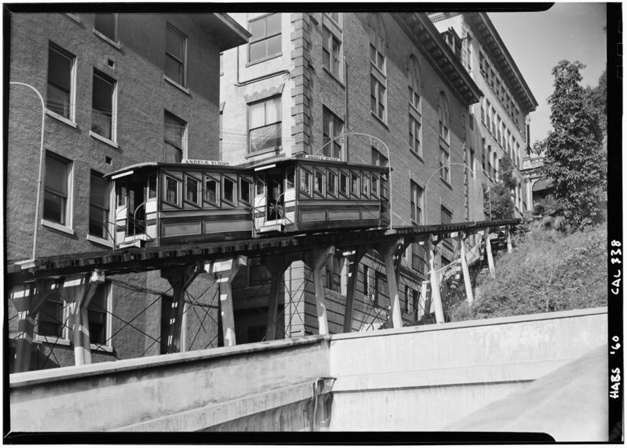
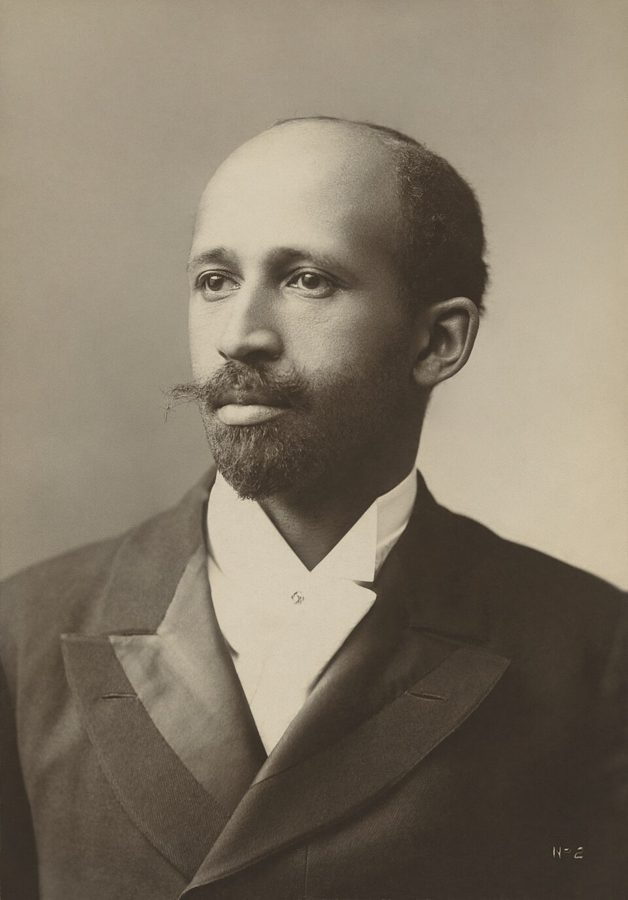
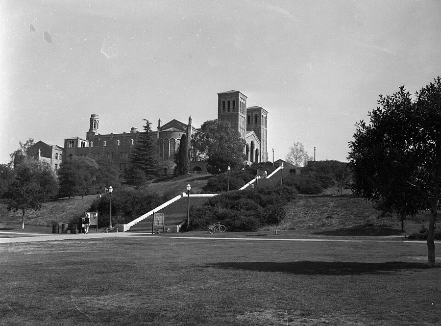

这一页在做什么
六十年代前半，他和 Connie 在洛杉矶。他从州立学院的社会学学生，变成 UCLA 的经济学研究生。讲几件事：夫妻俩用信封管钱、照广告跑好几家店淘特价货；半夜顶撞警察，又进了一回拘留所；第一门经济学拿了 D，差点换专业；Connie 病倒、存款见底时，银行因为案底不要他，县缓刑局却雇了他。读的时候抓两条线：钱从哪来、怎么省；每到岔路口，是谁推了他一把。

洛杉矶市中心的短程缆车 Angels Flight，两节车厢在坡道中间交会。美国历史建筑调查（HABS）1960 年 10 月拍摄，就是作者夫妇来洛杉矶的前一年。§1 第 4 段：周六买完菜，花五分钱坐它上坡。Jack Boucher（美国国家公园管理局），公有领域，维基共享资源 读之前：这一页在他一生的哪里
上一页讲到 1961 年夏他退役回费城开出租车，到年底和 Connie 攒下九百多美元，开着旧车拖着全部家当去了洛杉矶（预备役那几年的事也在上一页）。这一页从 1962 年 2 月他进 California State College 写起，到 1967 年前后他在 UCLA 拿到经济学硕士。这几年美国通过了 1964 年的《民权法》，越战一步步升级；加州的公立大学对本州居民几乎不收学费。
1962 年 2 月
进 Cal State LA，读社会学
§1
1963 年春
Connie 流产住院，存款剩 35 美元
§4
1963 年夏
跟父亲干建筑活
§4
1963 年 9 月
缓刑局面试，录用为夜班看守
§4
大三
读杜波依斯，转读经济学（书里没给年份）
§3
1965 年夏
本科毕业，征文落选，进 UCLA 读硕士
§5
1967 年
辞缓刑局、去 LACC 兼课、拿硕士
§5
这三件事的先后，书里的说法对不上
本站示意图：这一页的几个年份，都照书里写的。空心点是书里没给年份或说法对不上的地方。§2 的那次被捕，书里也没说是哪一年。 读的时候带着这几个问题。不用先找答案，读完回来对照「检查一下理解」。
他和 Connie 怎么在洛杉矶过紧日子？两个人对「省钱」的看法一样吗？§1
他说自己交朋友宁可犯「第一类错误」。Alchian 的回答为什么让他想了几十年？§1
一门课拿了 D、一份工作因为案底落空：每次差点放弃时，是谁、是什么让他接着往下走？§3
同一份案底，两家雇主为什么给了两种答复？书里只记下了答复，没有评论，你怎么看？§4
分节地图
这一页是原书第 4 章的前五节（章首没有小标题，本站记作 §1）。粗体是这一节的地标；斜体是英文这一节开头的几个词，在 Kindle 里搜它就能跳到那里，错字照电子书原样。读完打个勾。
信封管钱，花生酱之争，旧金山三天约 1200 词 FEBRUARY 1962 FOUND ME ENROLLED … 一连串省钱的办法。第 11–15 段插进几年后和 Alchian 的一场对话。 半夜散步，1957 年的罚单约 400 词 My last brush with the law … 又一次顶撞警察。留意第 23 段他自己承认的事。 Cole 的 D，Kirsch 的 A约 400 词 I found myself enjoying life … 转读经济学，第一门课就差点让他放弃。 存款剩 35 美元，进了县缓刑局约 900 词 Everything was going quite well … 原标题的 Easy Street 是「好日子」。看他怎么从险境走到宽裕。 落选的征文，UCLA 的研究生院约 700 词 In the summer of 1965, … 一次落选换来一条路。第 44–47 段的年份前后有出入。
出场的人
按出场顺序。书里的家人、同学和老师只写书里说的；公众人物写生卒年。
Connie 作者的妻子，第 2 章出过场 嫌他省钱是抠门（第 3 段）；人缘好，聚会回来常教他待人接物（第 8 段）；劝他别放弃经济学（第 25 段）。1963 年春流产住院（第 29 段），病好后在联邦储备银行当职员（第 38 段）。
Armen Alchian 1914–2013，UCLA 经济学家，公众人物 第 11 段：这段对话发生在几年后作者读研究生时，作者把它插在这里。听作者讲「两类错误」，笑着给了他第三种可能。
父亲 书里没写名字，第 1、2 章出过场 第 23 段和 Connie 一起去警局保他出来。主要靠 Connie 出面调停，父子和好（第 30 段）。是板条工、工会第 42 分会的书记，1963 年夏带他干建筑活。第 40 段提到父亲先后娶过五任妻子。
Professor Cole Cal State 的微观经济学原理老师 第 25 段：两人合不来；期中考后叫他去办公室，劝他换专业，最后给了 D。Connie 说他是种族主义者；作者说这一点拿不准，只确定他是个混蛋（第 27 段）。
Arthur Kirsch Cal State 的中级微观经济学老师 第 25–28 段：作者在他班上每次考试都拿 A。后来成了朋友和导师，送书给他读；和妻子 Peggy 年年请作者夫妇去家里吃圣诞晚饭。第 40 段鼓励他读研究生。
W.E.B. DuBois 1868–1963，历史学家、社会学家，公众人物 今天多拼作 Du Bois。第 24 段：作者暑假读了他的 Black Reconstruction，转读经济学的决定很大程度上受这本书影响。见「背景」。
Carey Jenkins 作者的同学 第 31 段：在美国银行一家分行兼职，介绍作者去应聘。分行经理说，作者在费城的那次定罪让他不能被录用。
Phil Connie 的哥哥 第 39 段：替人持械抢劫开车，在宾州坐牢。作者在缓刑局工作，监狱方面就同意把他假释到作者家；他住了几个月，找工作和住处。
Harold Summers 征文评委，UCLA 经济学教授 第 41 段：书里说他是 UCLA 经济系的一位院长兼教授。作者落选后在走廊上叫住他，劝他报考研究生院。当时 UCLA 有位经济学教授 Harold M. Somers（2001 年去世），多半就是他。
Jack Hirschleifer 1925–2005，UCLA 经济学家，公众人物 通常拼作 Hirshleifer。第 42 段：经济系的研究生导师，看了作者 3.0 的平均分，说他确实该担心。
Alice Vandermuelan UCLA 研究生微观理论课的老师 第 43 段：作者跟不上，几次去找她，她很体谅，推荐他读经济学家 William Baumol（1922–2017）的书补数学。
Werner Hirsch 1920–2009，UCLA 经济学家，公众人物 第 47 段：UCLA 政府与公共事务研究所的主任，经同学 Bob Butler 介绍，雇作者当研究助理，月薪约七百美元（见错字表）。
背景：作者默认你知道的事
按在书里出现的顺序排，标题前是节号。这里只讲事情本身，作者怎么看放在后面几节。
§1 加州的三级公立大学加州 1960 年定了一份高等教育总体规划（Master Plan），把公立大学分成三级：加州大学（University of California，UCLA 是其中一校）管研究和博士；州立学院（State College，作者读的 California State College/Los Angeles，后来改称大学）以本科和硕士为主；社区学院（junior college，第 44 段的 two-year schools）读两年。规划延续了对本州居民不收学费的原则，学生只交杂费。第 2 章他读的 LACC 一学期 12 美元，第 41 段 UCLA 一学期 75 美元，都是这个背景。
§1 Grand Central Market 和 Angels FlightGrand Central Market 是洛杉矶市中心的室内菜市场，1917 年开业，一头临 Broadway 街，一头临 Hill 街，至今还在。旁边的 Bunker Hill 是一道陡坡，1901 年起有一段很短的缆车 Angels Flight 上下坡，两节车厢一上一下。1969 年那一带拆迁改造，缆车停开，1996 年在往南半个街区的地方重开。第 4 段：周六夫妻俩把车停在 Hill 街，走陡台阶下去买肉和菜，回来时拎着大包小包，花五分钱坐缆车上去。
§1 便宜的去处第 16 段的 Knott's Berry Farm 在洛杉矶东南的 Buena Park，起家是一家卖浆果和炸鸡晚餐的农场，后来添了「西部鬼城」之类的景点，1968 年以前进园不收门票。drive-in movie 是汽车电影院：把车开进露天场地，停在大银幕前，在车里看。第 17 段的 Tarantino's 是旧金山渔人码头的一家餐馆；Alcatraz 是湾里的小岛，曾是联邦监狱，第 18 段他们坐船绕岛一圈。
§3 杜波依斯和《黑人的重建》
W.E.B. Du Bois，1907 年 James E. Purdy 拍摄，比他写 Black Reconstruction 早将近三十年。现藏美国国家肖像馆。James E. Purdy / Adam Cuerden，CC0，维基共享资源 W.E.B. Du Bois（杜波依斯）是第一个在哈佛拿到博士学位的黑人，也是全国有色人种协进会（NAACP）的创办人之一。重建时期（Reconstruction）指南北战争后的 1865–1877 年，联邦在南方推行黑人的公民权，后来半途而废。当时史学界的主流（以 Dunning 学派为代表）把重建写成一场失败，常把责任推给刚获得选举权的黑人。Du Bois 1935 年出版 Black Reconstruction in America，从劳动和阶级的角度改写这段历史，比如把奴隶在战时离开种植园看成一场「总罢工」。出版时挨了不少批评，后来成了这个领域的经典。书里没说是这本书的哪一点让他转向经济学。
§2 违章罚单和拘捕令在美国，违章停车的罚单要按期交钱，不服可以出庭申辩；既不交钱也不出庭，法院可以签发拘捕令。平时没事，一旦被警察拦下查证件，电台一查就出来，当场带走。被捕的人交了保释金（bond，第 23 段 post bond）才能先出来，等开庭。第 22 段说的就是这种情况：1957 年他在洛杉矶吃了几张违停罚单，因为要回费城，就没理。
§4 板条工和石膏板老式的抹灰墙，先在墙骨上钉一层木条或金属网（lath），再往上抹灰泥。钉这层底子的工人叫 lather（板条工），有自己的全国工会 Wood, Wire and Metal Lathers International Union（1899 年成立，1979 年并入木工工会）。第 30 段父亲是这个工会洛杉矶第 42 分会的书记。Sheetrock 是美国石膏公司的石膏板品牌，后来成了石膏板的通称；第 30 段说它被当作抹灰墙和天花板的底子。
§4 缓刑、假释和案底probation（缓刑）是判了罪但不送监狱，在缓刑官监督下留在社会上；parole（假释）是坐了一段牢以后提前放出来，在监督下生活。第 32 段作者进的县缓刑局监督缓刑的人，也管少年法庭送去营地的孩子；第 39 段 Phil 则是从宾州的 Graterford 监狱（费城西北郊的州立监狱，2018 年关闭）假释出来的。银行业有一条 1950 年的联邦法律，不许受保银行未经批准雇用犯过不诚实、背信一类罪的人；书里作者的罪名是妨害治安和袭警（第 2 章），书里只写经理说那次定罪让他不合格，没说依据是什么。雇主凭案底推测一个人，和统计歧视 的道理相通，这是本站的联想，作者没有这样连。
§5 姐妹会和 UCLA
1956 年的 UCLA：台阶尽头是校园最早的建筑之一 Royce Hall。作者九年后进了这里的研究生院。《洛杉矶时报》照片。Los Angeles Times，CC BY 4.0，维基共享资源 美国大学里的兄弟会（fraternity）、姐妹会（sorority）是以希腊字母命名的学生社团，毕业后也终身是会员，常办奖学金和社区活动。第 40 段的 Alpha Kappa Alpha 1908 年在华盛顿的 Howard 大学成立，是黑人女大学生建立的最早的姐妹会。第 42 段说 UCLA 经济系那时排在全国前十几名，研究生的平均分大多比他的 3.0 高得多。
先用中文过一遍：这一页的经济学
作者讲到经济学的地方，这里先从书外把道理讲一遍：它是什么、经济学一般怎么分析。它在这一页起什么作用，看每块最后一句。讲过的概念都汇总在经济学概念 。
§1 引客的亏本特价品 loss leader 商店把几样人人常买、一比就知道贵贱的东西（罐头、果汁、鸡蛋）标得很低，甚至低于进价，登在报纸广告上，图的是把人引进门：顾客来了，顺手按原价买别的东西，店就赚回来了。这招押的是多数顾客懒得为几样特价货跑好几家店。只挑特价货、别的不买的顾客，零售业叫 cherry picker（摘樱桃的人）。经济学家多把它看作一种广告开销，顾客得了实惠；也有人说它是大店挤垮小店的手段。加州的《不公平行为法》明文禁止 loss leader，但加州最高法院 1999 年在 Cel-Tech 案里说，要证明卖家存心打击对手才算违法。
在这一页： §1 第 4 段：夫妻俩照广告跑五六家店，只买特价货。照本站的说法，他们正是这招最不赚钱的那种顾客。来回跑的时间和油钱，见机会成本 。
§1 第一类错误和第二类错误 Type I and Type II errors 统计检验先立一个「原假设」，再看证据够不够推翻它。错有两种：原假设本来对，却被推翻了，叫第一类错误（误报）；原假设本来错，却没被推翻，叫第二类错误（漏报）。拿垃圾邮件过滤器打比方，原假设是「这封信正常」：过滤得严，正常信常被扔进垃圾箱，第一类错误多；放得松，垃圾信常混进收件箱，第二类错误多。证据不变时，压低一种，另一种就会上升；要两种都少，只能多收集证据。哪种错代价大，就少犯哪种：法庭宁可放过有罪的人也不冤枉无辜，就是这个道理。近年统计学界有人主张别再拿一个固定门槛一刀切（2019 年《自然》上八百多位学者联署的评论）。
在这一页： §1 第 11–15 段：作者借这两个词比自己和 Connie 怎么看生人：他宁可错把朋友当敌人，Connie 宁可错把敌人当朋友。这是打比方，不是在做统计。
其实是朋友
其实是敌人
当成朋友
先信任
当成敌人
先提防
对：交到朋友
第二类错误
错把敌人当朋友，被出卖
Connie 宁可犯这种
第一类错误
错把朋友当敌人，少了朋友
作者宁可犯这种
对：躲过一劫
Alchian 的第三种：多数人既不是朋友，也不是敌人
他们根本没在想你（第 14 段）
本站示意图：第 11–14 段的比方。原假设定为「这个人是友善的」，两类错误的名字才这样对上。作者的表格只有两行两列；Alchian 的意思是，这张表本身就漏了最常见的一种人。 词与短语
你用 Kindle，单个生词长按就能查，这里只收词典帮不上的：每个词都认识、合起来不懂的说法，口语和俚语，那个年代的说法，反话。斜体小字是原句里连续的几个词，错字照电子书原样，搜它就能跳到那里。点「记下」收进词本。
§1 信封管钱，花生酱之争，旧金山三天
brown-envelope system
… We managed our money through a …
牛皮纸信封理财法
原文 brown-envelope 在引号里，紧跟这几个词后面。每份工资按用途分装进几个信封，哪个信封空了，那一项就不能再花。
she called it being cheap
… she called it being cheap …
她管这叫抠门
cheap 说人就是「小气」。他自称 thrift（节俭），她说是 cheap，同一件事两种叫法。
border on the ridiculous
… our arguments bordered on the …
近乎荒唐
border on 是「挨着、接近」。作者回头看自己，自嘲。
store brand
… I wanted the store brand because …
超市自有品牌
超市用自己的牌子卖的货，比名牌（这里是 Skippy 花生酱）便宜。
to no avail
… like Skippy, but to no avail …
白费力气，没用
他提出自己来搅匀花生酱，Connie 还是不肯。
Skippy prevailed
… Skippy prevailed as our peanut butter …
Skippy 赢了
prevail 一般说打赢官司、占上风，拿来说一罐花生酱，是故意用大词的玩笑。
loss leaders
… so-called loss leaders, that we …
引客的亏本特价品
见「经济学」一节。
many a
… resulting in many a tuna-casserole dinner …
好多顿
many a 后面跟单数名词，意思是「许多」，口气比 many 更书面、更带感慨：金枪鱼特价，于是吃了一顿又一顿金枪鱼焗菜。
Angels Flight
… ride the Angels Flight cable car …
（地名）天使铁路，一段短程缆车
见「背景」。
unheard-of novelty
… That was an unheard-of novelty to …
闻所未闻的新鲜事
他说的是二十四小时营业的超市，那时费城还没有。
checks and dirty eggs
… saved money by purchasing what were called …
裂壳的和脏的蛋
原文 checks and dirty 在引号里，紧跟这几个词后面。checks 指蛋壳上的细裂纹。这种蛋没洗、品相差，便宜卖。
effect savings
… We effected other savings through such …
省下钱来
effect 作动词是「实现、办成」，不是 affect（影响）。
an instant friend to most people
… was an instant friend to most …
跟谁都一见如故
instant 是「立刻的」，像 instant coffee。
a civilizing and humanizing influence
… a civilizing and humanizing influence in …
让人变得有教养、有人情味的影响
civilize 本义是「教化」。作者是感激地这样说妻子的。
eye-opener
… an important eye-opener for me …
让人大开眼界的事
needling-type discussions
… one of our needling-type discussions during …
互相挑刺、抬杠式的讨论
needle 作动词是「拿话刺人、逗弄」。他和 Alchian 爱互相刺几句，下一页还有很多。
Type I error
… the professor that I preferred making a …
第一类错误
原文在引号里，紧跟这几个词后面。见「经济学」一节。
take the wind out of someone's sails
… took the wind out of my …
一下子让人泄了气
帆船的说法：抢到别的船上风处，挡住它的风。他正得意，被 Alchian 一句话打蔫了。
not give a damn about you one way or another
… don't give a damn about you …
对你既不喜欢也不讨厌，压根不在乎
one way or another 在这里是「无论哪一边」：既不是要害你，也不是要帮你。这是 Alchian 的话，不是愤世嫉俗，是戳破「人人都在想我」的错觉。
plant a seed for thought
… He simply planted a seed for …
抛下一个话头让人自己去想
后半句 left it to grow-or not：长不长，看你。
on the cheap
… a lot of fun on the cheap …
花很少的钱
这里的 cheap 不贬义，和第 3 段 Connie 说的 cheap 不是一回事。
drive-in movie
… a neighborhood or drive-in movie …
汽车电影院
见「背景」。neighborhood movie 是街坊的小电影院。
make do with
… we made do with cheap breakfasts …
拿……将就
walk-away crab salad
… called a walk-away crab salad …
边走边吃的蟹肉沙拉
渔人码头的小摊卖的，装在纸杯里拿着走。
§2 半夜散步，1957 年的罚单
brush with the law
… My last brush with the law …
（和警察、法律）打交道，惹上一点麻烦
brush 是擦身而过的一下，往轻里说。last 是「最后一次」，不是「上一次」。
walk off one's anger
… attempt to walk off my anger …
走一走把气消了
walk off 加一种情绪或感觉：靠走路把它散掉，如 walk off a big meal。
have every right to
… He had every right to be …
完全有理由
作者先替警察说句公道话：凌晨一两点有人在市中心晃，起疑很正常。
wisecrack
… That wisecrack provoked him …
俏皮话，顶嘴的风凉话
指上一段他让警察也下车走走的那句。
phone in
… and he phoned in the information …
（用车上的电台）报回总部查
failing to appear in court
… for failing to appear in court …
没有按期出庭
见「背景」。
the wee hours
… So now, in the wee hours …
后半夜，凌晨一两点
wee 是苏格兰说法的「小」：钟点数字小的那几个小时。
post bond
… come downtown to post bond for …
交保释金
post 在这里是「交付、缴存」，不是「邮寄、张贴」。
§3 Cole 的 D，Kirsch 的 A
junior year
… During my junior year at Cal …
大三
美国四年本科依次叫 freshman、sophomore、junior、senior。本科中途可以换专业（major），第 24 段就是。
Black Reconstruction
… W.E.B. DuBois' Black Reconstruction …
（书）《黑人的重建》
全名 Black Reconstruction in America，1935 年出版。见「背景」。
principles of microeconomics
… in principles of microeconomics, resulted in …
微观经济学原理（入门课）
principles 在美国大学课名里指入门课，下一段的 intermediate 是中级。
call on
… Professor Kirsch frequently called on me …
（课上）点名让某人回答
不是「拜访」。
look up to
… white students looking up to me …
敬重，仰慕
全班只有他一个黑人学生，所以这一句他说得格外得意。
s.o.b.
… he was a racist s.o.b. …
混蛋
son of a bitch 的缩写，粗话，缩写了稍微客气一点。作者把 Connie 的话拆成两半：后一半他认，前一半他不敢断定。
§4 存款剩 35 美元，进了县缓刑局
lather
… a well-respected lather in and secretary …
板条工
不是「肥皂沫」。见「背景」。
No less than a miracle
… No less than a miracle happened …
简直是奇迹
no less than 是「不亚于、简直就是」，强调，不是「至少」。
off the hook
… were off the financial hook …
（经济上）脱了困
off the hook 本义是鱼脱了钩，引申为「摆脱麻烦、不用再负责」。作者在中间插了 financial。
probation attendant
… hired as a probation attendant …
缓刑局的看守员
下一段说是夜里看管少年营。见「背景」。
godsend
… Landing that position was a godsend …
天赐的好事
land a position 的 land 是「弄到手」，像钓到鱼。
big time babysitting
… I called it big time babysitting …
大号的看孩子
自嘲：一份正经的公职，说穿了就是夜里替人看着一营地睡觉的男孩。big time 是「大规模的、够格的」。
juvenile detention camp
… oversee a county juvenile detention camp …
县办的少年管教营
relief man
… one of the probation department's several …
替班的人
原文 relief men 在引号里，紧跟这几个词后面。relief 在这里是「换班、顶替」，和第 1 章的 relief（救济）不是一个意思；句末的 relieved me 也是「来接我的班」。
fill in for
… but filled in for probation attendants …
顶替某人
bedded down
… were already bedded down for the …
已经睡下
night man
… deliver a late dinner for the …
值夜班的人
原文 night man 在引号里，紧跟这几个词后面。
back to back
… I took classes back to back …
一节接一节，中间不空
paroled to our custody
… robbery, paroled to our custody …
假释出来，交我们监护
见「背景」。parole 是假释，不是缓刑。
getaway car
… driving the getaway car for an …
（作案后）逃跑用的车
§5 落选的征文，UCLA 的研究生院
fourth of what would ultimately be five wives
… my father's fourth of what would …
父亲先后五任妻子里的第四任
would ultimately be 是从当时看「后来会是」。作者顺带挖苦了一下父亲。
sorority
… Alpha Kappa Alpha, her sorority …
（大学的）姐妹会
见「背景」。
hail
… economics department, hailed me …
招呼，叫住
hail 作动词是「打招呼、喊住」，如 hail a cab（招手叫出租车）；不是「下冰雹」，也不是「欢呼」。
highly subsidized tuition
… UCLA's highly subsidized tuition was only …
由政府大量补贴的学费
见「背景」第一块和「对照今天」。
in over my head
… I was in over my head …
力不从心，应付不来
本义是水没过了头顶。
Economic Theory and Operations Analysis
… William Baumol's Economic Theory and Operations …
（书）《经济理论与运筹分析》
经济学家 William Baumol 1961 年出的教科书，讲经济学要用的数学工具。
two-year schools
… of California's two-year schools, including …
两年制学院，社区学院
见「背景」第一块。
full-fledged
… a job as a full-fledged probation officer …
正式的，够格的
fledged 是小鸟羽毛长全、能飞了。他原来是看守员，这是一个正式缓刑官的空缺。
jump at the opportunity
… I jumped at the opportunity …
一把抓住机会
turn-downs
… some of the turn-downs I had …
拒绝，碰的钉子
由 turn down（拒绝）变来的名词。
读不通的扫描错字：
… ENROLLED asafull-time student at … 应为 as a full-time。… betrayed ata cost of … 应为 at a cost。… in the ig6os, Los Angeles … 应为 1960s。… I worked from zo:oo P.M. … 应为 10:00 P.M.；后面的 6:0o 是 6:00。… the camp's go to zoo boys … 应为 90 to 100 boys，营里有九十到一百个男孩。… assessment turned out to correct … 原文少了一个 be，应为 turned out to be correct。… The salary was $7oq a … 多半是 $700，下一页之前没有别处可对。
对照今天
书里能拿今天的数据和研究检验的几个说法。每张卡的标签判的是标题里那句「书里的说法」；「今天」一栏的数字都联网核过，写了核对日期和依据。
成立 后来的数据和研究支持这个说法部分成立 一部分对，一部分要打折扣被改写 后来的事实推翻了它，或者完全变了样有争议 研究者至今看法不一书里的说法：UCLA 的学费由政府大量补贴，一学期只要 75 美元，用不着奖学金
书里 1965 年夏，Summers 劝他报考 UCLA 研究生院时这样说，他就去读了，同时继续在缓刑局上班（§5 第 41 段）。
当时（1965） 加州大学 1970 年以前不向本州居民收学费（tuition）名目的钱，只收杂费（incidental fee，1968 年改称 registration fee）。书里叫 tuition 的这笔钱，多半就是这类费用。照书里一学期 75 美元算，他第一学年（1965–66）两学期合 150 美元，按美国劳工统计局的消费者价格指数折算，约合 2025 年的 1500 美元。UCLA 1966 年秋改成学季制，之后怎么收，书里没说。
今天 加州大学 1970 年起向本州学生收「教育费」，后来正式叫学费，一路上涨。UCLA 2026–27 学年的研究生预算里，本州学生一年交全校统一学费 15,066 美元、校园杂费 472 美元，合计 15,538 美元；外州学生另交一笔非本州学费（2025–26 年是 15,102 美元）。扣掉物价，大约是作者那时的十倍。核对于 2026-10。依据：UCLA 学生资助办公室的研究生费用预算（2025–26、2026–27）；UCLA 学生服务费咨询委员会的学费历史；美国劳工统计局 CPI-U 年均值（1965 年 31.5，2025 年 321.9）；UCLA 1966 年改学季制据校报 Daily Bruin。
另一边 这一页出场的 Werner Hirsch 晚年主张「高学费、高资助」（常称密歇根模式）：付得起的人多付，再拿钱资助穷学生。照这种看法，便宜到人人一样的学费，等于也补贴了富裕人家的孩子。
值得停下来的句子
Thanks to her, I am, in important ways, not quite the person today that I was back then.— §1 第 8 段。本站译：多亏了她，在一些要紧的地方，今天的我已经不太是当年的我了。
说的是 Connie。口气是感激，也有一点自嘲：紧接着他就记下她在聚会后数落他「非得证明你比别人聪明吗」。in important ways 和 not quite 两处都往回收了一步，他不说自己脱胎换骨，只说在要紧的地方变了。全书写到 Connie 的地方，差不多都是这个调子：每到岔路口，推他一把的常常是她。
I'm not sure whether he was a racist, but was definitely an s.o.b.— §3 第 27 段。本站译：他是不是种族主义者，我说不准；但他是个混蛋，这一点确定无疑。
Connie 给 Cole 下的判语有两半，作者只认后一半。这是一句玩笑，也是他的一个习惯：不轻易给人扣「种族主义」的帽子，哪怕那个人给了他 D、劝他别念经济学。第 3 章他对韩国那些军官也是这样说的。读到后面他挨别人骂的那几页，可以回头想想这一句。
检查一下理解
先在心里答，再点开。答错的那题，回书里把对应那一节再读一遍。
1.（§1）信封管钱是怎么个管法？「extra」那个信封里的钱派了什么用场？ 每份工资按用途分进房租、伙食和日用、衣服、学费书本、娱乐几个信封，各项花剩的钱放进 extra。攒到 80 美元时，他们开车去旧金山玩了三天，回来还剩 8 美元。
2.（§1）作者说自己宁可犯「第一类错误」，是什么意思？Alchian 的「第三种可能」是什么？ 他对生人先当敌人看，等对方证明是朋友，这样少被出卖，代价是朋友少；Connie 正相反。Alchian 说：也许人们对你根本不在乎，既不想害你也不想帮你。作者想了几十年，觉得他多半是对的。
3.（§2）这次被捕的根子在哪里？到了法庭上，作者做了一件什么事？ 1957 年他在洛杉矶吃了几张违停罚单，要回费城就没管，于是有了一张未出庭的拘捕令。半夜散步时顶撞了盘问他的警察，警察一查证件就查了出来。开庭时他对法官撒谎说当兵去了、没收到通知，法官免了滞纳罚款，只让他交原来的罚单钱。
4.（§3）第一门经济学拿了 D，是什么让他没换专业？ Cole 劝他换专业，他本来打算听；是 Connie 劝他再上一门试试。他选了 Kirsch 的中级微观，每次考试都拿 A，信心回来了。
5.（§4）同一份案底，美国银行和县缓刑局的态度有什么不同？ 银行经理说那次定罪让他不能被录用。缓刑局的面试官说，他们更看重他最近的表现和以后的前途，录用他当看守员，一年 5,200 美元，另有里程补贴。
6.（§4）缓刑局的夜班为什么对一个全日制学生特别合适？ 夜里男孩们多已睡下，做完一个来小时的文书，剩下的时间都能读书，还管饭；早上六点下班赶得上八点的课；他多在周末上班，平日空出两天上课。
7.（§5）Summers 为什么说他读研究生用不着奖学金？ UCLA 的学费由政府大量补贴，一学期只要 75 美元。作者征文只拿了第四名，没拿到奖学金，却因为这番话报考了 UCLA。
用一句话说这一页，写给一个没读过的人。
读完想一想
想一想：同一份案底，银行说不行，缓刑局说更看你最近的表现和前途。雇主该不该看求职者的犯罪记录？不让看，又会怎样？
几种看法 作者在这一页只记下两家的答复和自己的沮丧，没有评论。主张「禁问犯罪记录」（ban the box）的人说，案底不该让人一辈子找不到工作，加州 2018 年起不许五人以上的雇主在发出录用意向前问这件事。经济学家 Agan 和 Starr（2018）的实地实验、Doleac 和 Hansen（2020）的研究则发现，不让问以后，一些雇主改拿种族去猜，年轻黑人男性反倒更难被录用；研究者认为这是统计歧视 。
想一想：一位老师给了 D、劝他换专业，他本来要听；换了一门课，又门门拿 A。一次分数、一位老师的判断，该有多大分量？
几种看法 Connie 的看法很干脆：Cole 是种族主义者，别理他。作者自己不下这个结论，只说两人合不来，他的提问惹 Cole 心烦。借这一页的「两类错误」来看，一次考试也是一次带误差的检验：把能学好的人劝走是一种错，把学不好的人留下是另一种错；多考几次、换个老师，就是「多收集证据」。
想一想：Alchian 说别人对你根本不在乎，作者想了几十年，觉得他多半对。这句话让你轻松，还是让你泄气？
几种看法 作者把它当作一个慢慢长出来的领悟，没有说它让他难过。心理学家 Gilovich 等人 2000 年的「聚光灯效应」实验发现，人们普遍高估别人对自己的注意，这和 Alchian 的说法相合，很多人读来是一种解脱。Connie 的做法是另一种答案：先把人当朋友，朋友就多。
精彩回顾
读过又忘了，从这里想起来。挑的是这一页最值得记住的人、场面和说法，不按原书顺序；每条后面是节号，想细看就回书里那一节。全书各页的这一节都收在全书回顾 。
一句话： 从社会学转到经济学，从缓刑局的夜班读进 UCLA：每到岔路口都有人推他一把，头一个是 Connie。
花生酱之争 他要便宜的超市自有牌子，Connie 要 Skippy，嫌另一种难吃还浮油。他说自己来搅匀，还是输了。她嫌他抠门，后来却把信封管钱的法子推荐给娘家人。
§1 两类错误，和第三种 他说自己宁可错把朋友当敌人，妻子宁可错把敌人当朋友。Alchian 笑着说：也许别人根本不在乎你。他想了几十年，觉得多半是对的。
§1 又是一句嘴快 凌晨在市中心散步，他让盘问他的警察也下车走走，结果查出 1957 年没交的罚单，进了拘留所，还得打电话叫刚吵完架的 Connie 来保他。
§2 一个 D，一串 A Cole 给了 D、劝他换专业；Connie 劝他再试一门。Kirsch 的课上他次次考第一第二，全班只有他一个黑人。
§3 银行不要，缓刑局要 1963 年秋，眼看要退学打工养家。美国银行因为费城的定罪不要他；县缓刑局说更看重他最近的表现，让他夜里看管少年营，白天上课。
§4 第四名换来的路 征文只拿了第四名。评委 Summers 在走廊里叫住他：去考 UCLA 的研究生院吧，一学期才 75 美元，用不着奖学金。
§5